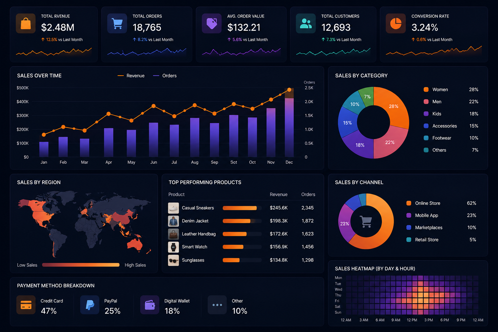
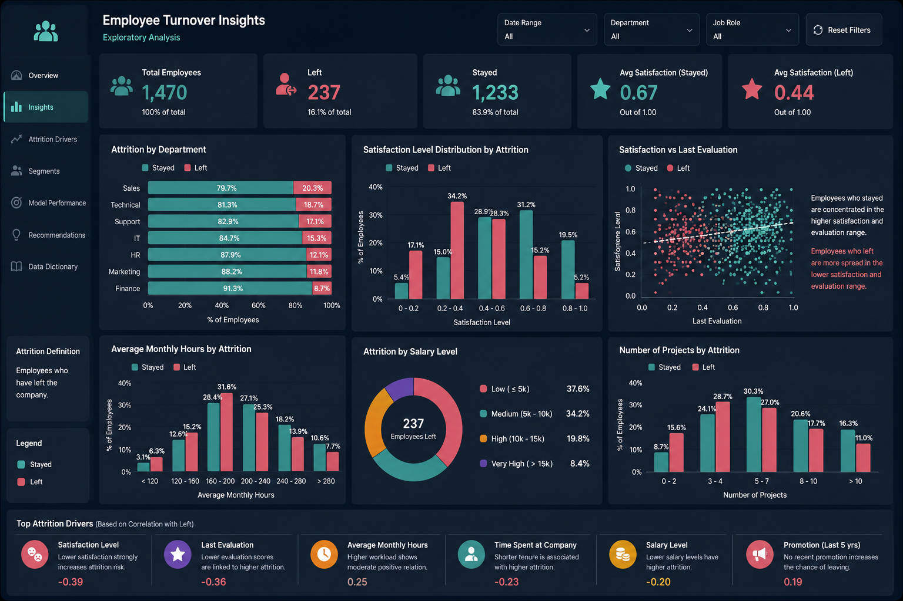
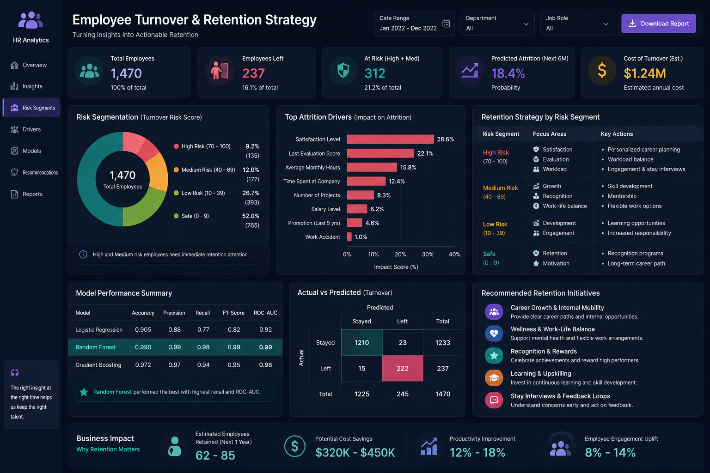

Employee Turnover Analytics
A machine learning project focused on understanding employee attrition at Portobello Tech by analyzing workplace satisfaction, evaluations, workload, tenure, promotions, and salary patterns. The project combined exploratory data analysis, clustering, class imbalance handling with SMOTE, and predictive modeling to identify turnover risk and support retention planning.

Project Overview
Portobello Tech wanted to build a smarter way to identify employees who may be at risk of leaving the company. The HR team maintained employee-level records covering factors such as satisfaction, last evaluation, number of projects, average monthly hours, years spent in the company, promotions, work accidents, salary band, and department.
The goal of this project was to analyze the drivers of employee turnover, segment employees who left into meaningful behavioral groups, handle class imbalance in the attrition label, and train machine learning models capable of predicting turnover risk. The broader business objective was to help HR move from reactive attrition handling to proactive employee retention planning.
What I Analyzed
- Performed data quality checks to identify missing values and validate dataset readiness for analysis.
- Explored the relationship between employee attrition and variables such as satisfaction, evaluation, workload, salary, tenure, and promotions.
- Used clustering to group employees who left based on satisfaction level and last evaluation patterns.
- Handled class imbalance in the attrition target using the SMOTE technique before model training.
- Built and evaluated multiple machine learning models using cross-validation and classification metrics.
- Translated analytical findings into retention-focused recommendations for high-risk employee groups.
Tools & Technologies
- Python
- Pandas
- NumPy
- Matplotlib
- Seaborn
- Scikit-learn
- SMOTE
- KMeans Clustering
- Classification Modeling
Dataset Snapshot
The dataset contains employee-level HR records used to predict whether an employee leaves the company. Key fields include satisfaction level, last evaluation, number of projects, average monthly hours, time spent at the company, work accident, promotion in the last five years, salary level, department, and the target variable left.
Key Findings
Employee Satisfaction Was a Strong Attrition Signal
Employees with lower satisfaction levels were far more likely to leave, making satisfaction one of the clearest early indicators of turnover risk in the dataset.
Attrition Was Not Random — Distinct Leaver Patterns Emerged
Clustering employees who left based on satisfaction and evaluation revealed different attrition profiles, suggesting that not all turnover stems from the same workplace behavior or engagement pattern.
Workload and Time Spent in the Company Mattered
Project load, monthly working hours, and tenure showed meaningful relationships with attrition, indicating that burnout, work intensity, or stagnation may be contributing to employee exits.
Class Imbalance Needed to Be Addressed Before Modeling
Because employees who left represented the minority class, SMOTE was applied to balance the training data and improve the model’s ability to detect attrition cases more reliably.
Predictive Modeling Enabled Targeted Retention Planning
By combining EDA, clustering, and classification modeling, the project created a framework for identifying at-risk employees and supporting targeted HR interventions instead of relying on broad, one-size-fits-all retention efforts.
Visual Highlights


Outcome & Takeaways
This project showed how HR data can be transformed into a practical attrition intelligence system. Instead of only measuring how many employees left, the analysis focused on understanding why employees leave, which employee groups are most vulnerable, and how predictive modeling can support earlier action. By combining exploratory analysis, clustering, imbalance handling, and machine learning, the project laid the foundation for more focused retention strategies, better workforce planning, and stronger employee risk monitoring.